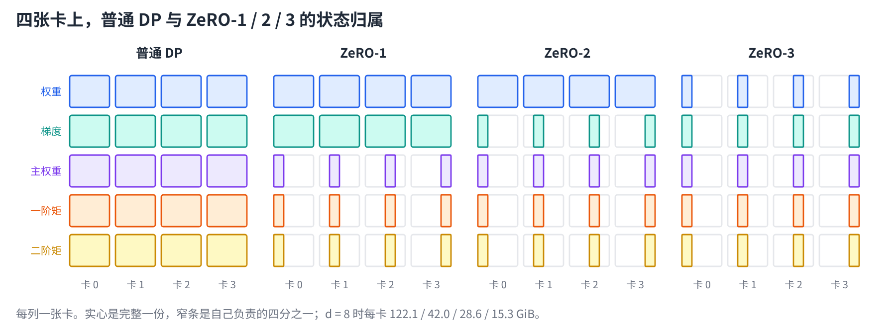
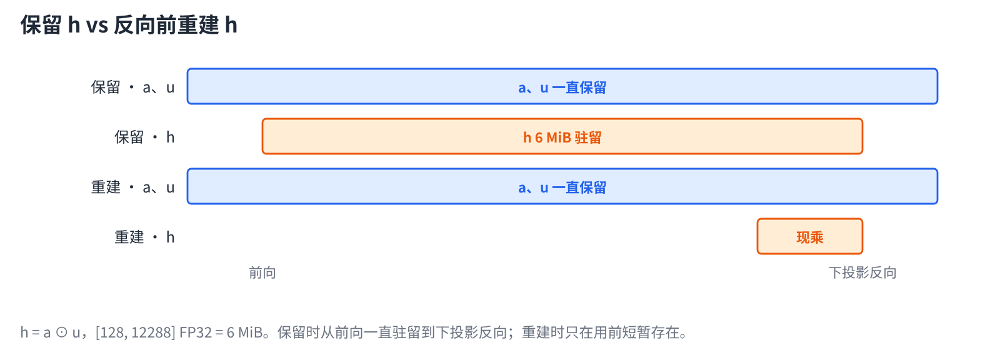
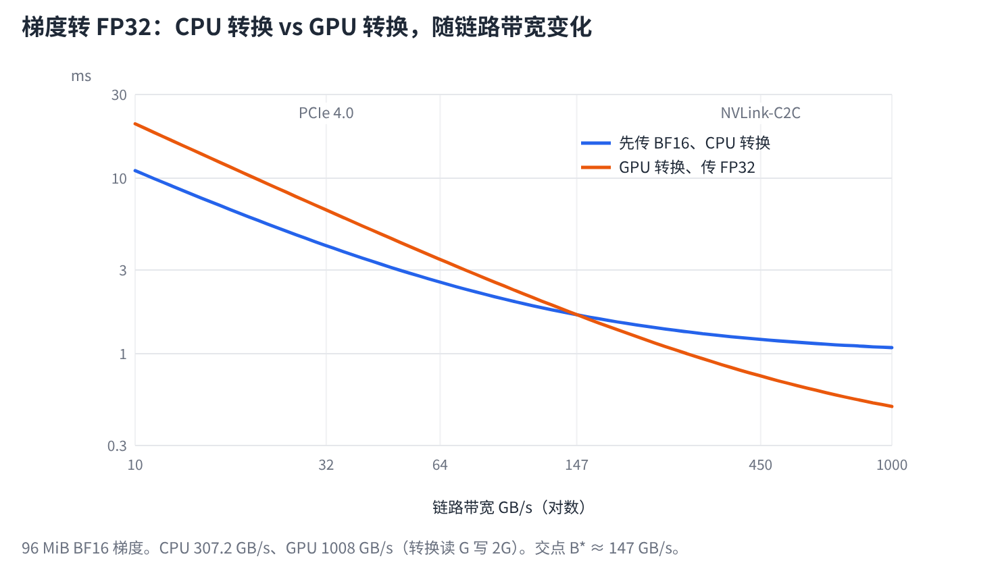
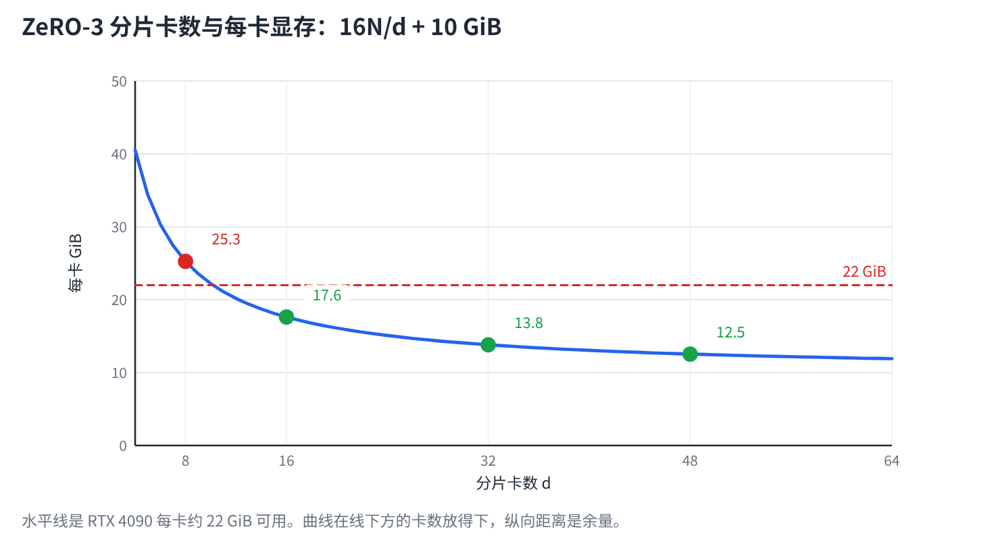
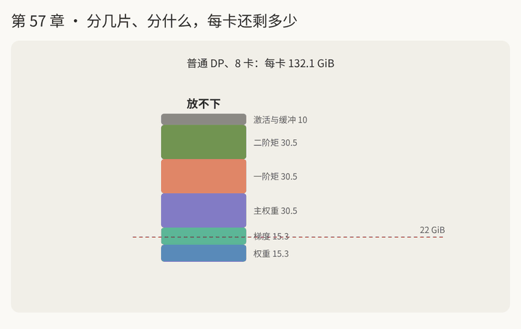

第 57 章 · 训练状态的分片、重计算与卸载：显存不够时的三条路
本地运行
git clone https://github.com/wikieden/ai-infra-from-constraints
cd ai-infra-from-constraints/code/notebooks
pip install jupyterlab torch numpy
jupyter lab ch57_state_sharding.ipynb也可以下载后直接用 VS Code 打开 .ipynb 运行。需要 GPU 的章节在 Colab 里选「代码执行程序 → 更改运行时类型 → GPU」。
本章回答：ZeRO-1 / 2 / 3 各把什么分片，八卡时每卡还剩多少？分片数翻倍，显存峰值为什么不减半？重算门控乘积能省多少激活？梯度从 BF16 转 FP32 放在 CPU 还是 GPU，为什么取决于链路带宽（分界 147 GB/s）？RTX 4090 每卡 22 GiB，是多分片还是多重算？
讲解日期：2026-11-24 · 上一章：第 56 章 训练的容量与时间估算 · 下一章：第 58 章 流水调度与通信重叠
对应原文：materials/ai-infra-book/manuscripts/10-训练系统.md§10.2 L147–L298（图 10-6 至 10-16）
本章缩写：ZeRO = Zero Redundancy Optimizer（零 / 冗余 / 优化器）· FSDP = Fully Sharded Data Parallel（全 / 分片 / 数据并行）· DP = Data Parallelism（数据 / 并行）· SP = Sequence Parallelism（序列 / 并行）· DMA = Direct Memory Access（直接 / 内存 / 访问）· C2C = Chip-to-Chip（芯片到芯片）· MLP = Multi-Layer Perceptron（多层 / 感知机）。全部缩写见 缩写与术语表
讲解
第一步：ZeRO 一阶段一阶段地分（2026-11-24）
类比：合租公寓的书。 每人一套全集最浪费（普通 DP）；先把很少翻的参考书分人保管（优化器状态），再把笔记分人保管（梯度），最后连正在读的书也每人只存几册，要读时找室友借（权重）。
原文 L149–L205：普通数据并行每卡都存一份完整的权重、梯度和优化器状态。\(d\) 张卡时每卡常驻：
| 配置（d = 8） | 每卡 GiB | 还完整复制的 |
|---|---|---|
| 普通 DP | 122.1 | 权重、梯度、优化器状态 |
| ZeRO-1 | 42.0 | 权重、梯度 |
| ZeRO-2 | 28.6 | 权重 |
| ZeRO-3 | 15.3 | 都已分片 |

图 57-1 · 每列是一张卡；"完整"是整份，"片"是四分之一。
- 执行一个模块：AllGather 取完整参数 → 前向或反向 → ReduceScatter 汇总梯度并分到各自负责的卡 → 各自更新自己那片。
- 分片数翻倍，峰值不减半：完整参数缓冲由模块大小决定，不随卡数缩小。FSDP2 的 CPU 小实验：2 → 4 进程，常驻 18 → 9 MiB，峰值 39 → 30 MiB（只降约 23%），因为执行期还有约 21 MiB 其他张量。
- FSDP 管模型状态归谁，SP 管激活在哪算：两条不同的并行轴。
场景代码：PyTorch FSDP2 按模块分片（真实 API，PyTorch 2.6+）：
import torch
from torch.distributed.fsdp import fully_shard, MixedPrecisionPolicy
mp = MixedPrecisionPolicy(param_dtype=torch.bfloat16, reduce_dtype=torch.bfloat16)
for block in model.layers: # 每个 Transformer 层一个 AllGather / ReduceScatter 单元
fully_shard(block, mp_policy=mp)
fully_shard(model, mp_policy=mp) # 根模块：词嵌入、输出层
一句话：ZeRO 依次分片优化器、梯度、权重；常驻按 \(1/d\) 降，执行峰值还要加上完整模块缓冲。
第二步：选择性重计算（2026-11-24）
类比：草稿纸。 草稿全留着，回头检查方便，但占地方；只留关键几步，缺的那步检查前现算。
原文 L207–L237：\(Y = XW\) 反向要 \(dX = dY W^{\mathsf{T}}\)（传给前一层）和 \(dW = X^{\mathsf{T}} dY\)（本层归约与更新），所以 \(X\) 要从前向留到反向。
例：Qwen3-8B 的 MLP 先算门控 \(a\)、上投影 \(u\)，\(h = a \odot u\)，再 \(Y = hW_{\mathrm{down}}\)。已经为非线性的反向留了 \(a, u\)，就可以在下投影反向前现乘出 \(h\)：
- \(h = [128, 12288]\) FP32 = 6 MiB，重建约 157 万次乘法；两个归一化输出各 2 MiB 也能重建；每层省 10 MiB。
- 九层的流水阶段：GEMM 输入 135 → 45 MiB；四个 micro-batch 同时等反向，长期保存少 360 MiB。
- 重建按层依次发生，最大工作区 6 MiB 反复复用。

图 57-2 · 收益来自数据生命周期：等反向的 micro-batch 越多，省得越多；新增的乘法是否拖长一步，看它落在时间线的哪里。
一句话：重算用一点计算换"从前向留到反向"的空间。
第三步：卸载与转换放哪一侧（2026-11-24）
类比：把东西寄存到隔壁仓库。 地方省了，可要用之前得及时取回；路越窄，越要少运。
原文 L239–L275：一份状态 \(V\)、链路 \(B\)、从能开始传到要用之间有 \(W\) 秒：
DMA 期间源缓冲要保留、目标缓冲已占用，卸载同时改变两端的缓冲生命周期。
例：门控投影梯度 BF16 \(G = 96\) MiB，CPUAdam 要 FP32（192 MiB）。转换读 \(G\) 写 \(2G\)，受内存带宽限制（4090 1008 GB/s，DDR5 八通道 307.2 GB/s）。
| 链路 | 先传 BF16、CPU 转换 | GPU 转换、传 FP32 |
|---|---|---|
| PCIe 4.0 x16，32 GB/s | 4.13 ms | 6.59 ms |
| GH200 NVLink-C2C，450 GB/s | 1.21 ms | 0.75 ms |

图 57-3 · GPU 转换快 0.68 ms，却要多传 96 MiB；链路慢时多传的代价更大。PCIe 5.0 x16 也只有 64 GB/s，所以经 PCIe 的卡都该先传 BF16。
GPU 转换时输入输出共存，峰值 288 MiB，多要 192 MiB 缓冲。SuperOffload 面向 GH200 这类紧耦合芯片，把转换位置和主机上的优化器一起安排。
一句话：卸载把容量问题变成传输问题；转换放哪，看省的转换时间抵不抵得上多传的字节。
第四步：4090 上多分片还是多重算（2026-11-24）
类比：房间不够大，是多租一间，还是把东西叠起来放。
原文 L277–L297：
| 方法 | 减少的显存 | 增加的工作 | 收益取决于 |
|---|---|---|---|
| 状态分片 | 重复保存的权重 / 梯度 / 优化器 | 参数收集、梯度归约 | 收集能否赶在模块执行前 |
| 激活重计算 | 前向到反向之间的中间值 | 重建前向值 | 重建是否拖慢关键路径上的反向 |
| 状态卸载 | 暂时不用的状态 | 主机与加速器间传输 | 能否在使用前传回 |
RTX 4090 标称 24 GB ≈ 22.35 GiB，按 22 GiB 可用。设激活、完整模块参数和工作区共 10 GiB：
| ZeRO-3 卡数 | 常驻 | 合计 | 余量 |
|---|---|---|---|
| 8 | 15.3 | 25.3 | −3.3（要重算 3.3 GiB） |
| 16 | 7.6 | 17.6 | +4.4 |
| 32 | 3.8 | 13.8 | +8.2 |
| 48 | 2.5 | 12.5 | +9.5 |

图 57-4 · 曲线在预算线下方的卡数都放得下；纵向距离是余量。先用这张图筛掉不可行的，再比每步耗时。
本任务两套方案都用全组 ZeRO-3、TP = PP = 1、每卡 micro-batch 一条序列，显存都够，接下来只比完成时间。
一句话：先按显存排除，再按时间挑；分片加通信，重算加计算，卸载加传输。
动画演示：分片数与每卡显存

可交互版：animations/57-state-sharding.html（选择：ZeRO 0–3；滑块：分片卡数 1–64；激活与缓冲 0–20 GiB）。
怎么看：
- 竖条按五类状态分色堆叠：权重、梯度、主权重、两份矩，最上面是激活与缓冲（第一步）；
- 虚线是 RTX 4090 的 22 GiB，越线变红；
- 播放：普通 DP 8 卡（122 GiB）→ ZeRO-1 → ZeRO-2 → ZeRO-3 8 卡（25.3，超）→ 16 卡（17.6）→ 48 卡。
练习与作答记录
题 1（第一步）：\(N = 14\)B、\(d = 16\)。ZeRO-1、ZeRO-2、ZeRO-3 每卡常驻各多少 GiB？
作答记录：（待作答）
题 2（第二步）：micro-batch 改成 512 个 token，其他不变。每层重算能省多少 MiB？八个 micro-batch 同时等反向，九层阶段一共省多少？
作答记录：（待作答）
题 3（第三步）：CPU 转换吞吐 200 GB/s、GPU 2000 GB/s。分界带宽多少？在 64 GB/s 的 PCIe 5.0 上该在哪边转换？
作答记录：（待作答）
口诀
合租的书先分参考书、再分笔记、最后连正在读的也分，要读时找室友借；
草稿只留关键几步，检查前现算；
寄存隔壁仓库要及时取回，路窄就少运；
房间不够，多租一间还是叠起来放，先看放不放得下，再看谁快。
本章复习卡片
I192（M₀–M₃ 公式，d = 8 时 122.1 / 42.0 / 28.6 / 15.3 GiB；分片翻倍峰值不减半）、I193（重算门控乘积每层 10 MiB、九层 90 MiB；卸载 T_wait、CPU / GPU 转换 4.13 vs 6.59 ms、B* ≈ 147 GB/s）、I194（4090 22 GiB：ZeRO-3 8 卡超 3.3 GiB，16 卡 17.6；三种方法各加什么工作）。练习做完后，按答错、卡住的地方再补。
附录 · 延伸阅读
留给以后深入学习用，不影响本章主线。★ 是建议先读的。
推荐阅读
| 读什么 | 读哪里 | 读它为了什么 |
|---|---|---|
| ★ AII 第 10 章 | §10.2 L147–L298 | 本章原文 |
| ZeRO（Rajbhandari et al., SC 2020） | §5 三个阶段 | 分片的原始设计 |
| PyTorch FSDP2 文档 | fully_shard |
实际接口 |
| Korthikanti et al. 2022《Reducing Activation Recomputation》 | 选择性重计算 | 挑哪些激活重算 |
| 第 32 章 数据、张量、序列并行 | SP | 另一条并行轴 |
数学原理
- 分片的容量：完整复制的部分不随 \(d\) 变，分片的部分按 \(1/d\)。
- 反向的两路梯度：\(dX = dY W^{\mathsf{T}}\)、\(dW = X^{\mathsf{T}} dY\)；\(X\) 必须活到 \(dW\) 算完。
- 两条路径打平：令 \(T_c = T_g\)，解出分界带宽。
公式清单
| 公式 | 意思 |
|---|---|
| \(M_1 = 4N + 12N/d\) 等 | ZeRO 每卡常驻 |
| \(M_{\mathrm{peak}} = \max_t(\ldots)\) | 显存峰值 |
| \(T_{\mathrm{wait}} = \max(0, V/B - W)\) | 卸载的等待 |
| \(B^* = 1/(3(1/C_c - 1/C_g))\) | 转换位置分界 |
代码对照：把本章的数字用代码算一遍
代码
ai-infra/solutions/chapter-code/ch57_state_sharding.py，测试tests/test_ch57.py：
bash cd ai-infra/solutions/chapter-code uv run python ch57_state_sharding.py uv run pytest tests/test_ch57.py
| 讲义 | 写法 | 跑出来 |
|---|---|---|
| 第一步 | zero_bytes(stage, 8) |
122.1 / 42.0 / 28.6 / 15.3 GiB |
| 第二步 | recompute_saving_mib() |
90 MiB；四个 micro-batch 360 MiB |
| 第三步 | cast_paths_ms(B=...)、cast_breakeven() |
4.13 / 6.59、1.21 / 0.75 ms；147 GB/s |
| 第四步 | zero_bytes(3, d) |
25.3 / 17.6 / 13.8 / 12.5 GiB |
代码里才看得到的 3 件事：
- 转换"读 \(G\) 写 \(2G\)"共 \(3G\) 字节，转换时间按内存带宽算，不按算力。
cast_breakeven与 \(G\) 无关：两条路径的差都正比于 \(G\)，交点只由三种带宽决定。- 22 GiB 是按 24 GB = 22.35 GiB 再扣运行时得到的，余量表都基于它。
自己改一改（不影响练习答案）：
- 给
zero_bytes加"梯度 FP32"的版本，看 ZeRO-2 的变化。 - 把
cast_paths_ms的 \(G\) 换成整个模型的梯度，看 PCIe 上一步要多久。 - 用
wait_s算：要让 1 GiB 状态不等，至少要提前多少毫秒开始传。